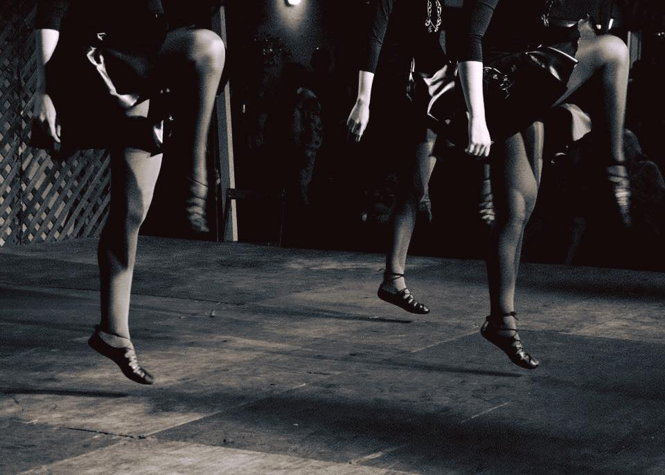

La danza irlandesa se ha convertido en una parte importante y significativa de la cultura de Irlanda. El origen de este baile parece remontarse a las danzas circulares que realizaban los Druidas en sus rituales religiosos, de las que se conservan, por ejemplo, las formaciones en anillo.
Desde entonces el baile irlandés ha ido evolucionando, convirtiéndose en fiel reflejo de los constantes cambios sufridos por el pueblo irlandés a lo largo de los siglos, a través de las migraciones e invasiones que conforman su historia.
El resultado, una fascinante fusión de culturas que da lugar a un baile rápido, enérgico y evocador, origen de estilos tan conocidos como el claqué.
